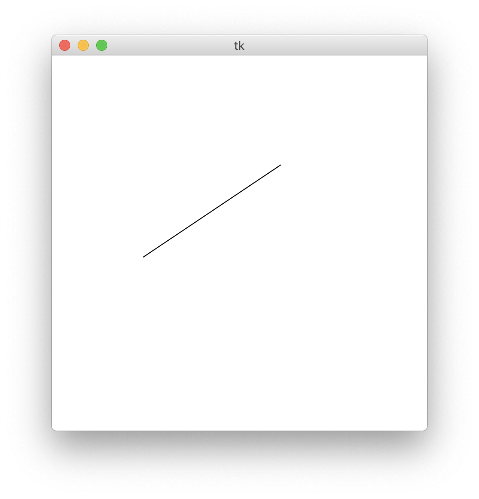

第4回
| 氏名 | 林橘平
|
|---|
| クラス | 総合情報学コース3年
|
|---|
| 学生証番号 | 08-192025
|
|---|
□課題4.1 - 4.3節 例 1:マウスイベントによる背景色の変更
○プログラムリスト
例題のため略
○実行コマンド
MBP:Chap04 hayashikippei$ python3 background.py
○実行結果
スクリーンショットを取れなかったのだが、クリックした状態では赤色になり、離すと上の緑色に戻っていた。
○考察
マウスを押している間と離した時の関数、pressedとreleasedを定義した。pressed, released ではそれぞれ、canvasをグローバル変数にしてcreate_rectangleで
背景と同じ大きさでそれぞれ赤、緑の長方形を作り出している。canvasをグローバル変数で定義することで
main()でpressed, releasedが実行された時に関数の中で変数canvasを扱え、色を変えることができる。
canvasをpressed, released の引数として定義することができないため、このように記述している。
□課題4.2 - 4.3節 例2:カーソル位置の獲得と描画
○プログラムリスト
例題のため略
○実行コマンド
MBP:Chap04 hayashikippei$ python3 marker.py
○実行結果
○考察
３つのボタンが押された時に応じてそれぞれ色が異なる、押された座標を中心とする半径Rの正方形を描く関数を定義する。
main()でそれぞれのボタンが押されたイベントに応じて３つの関数を呼び出すことで３色の正方形を描いている。
□課題4.3 - 4.3節 例3:マウスによる線分の描画
○プログラムリスト
例題のため略
○実行コマンド
MBP:Chap04 hayashikippei$ python3 rubberband.py
○実行結果

○考察
マウスが押された時に呼び出される関数pressedではglobal変数StartX, StartYに押された時の座標を記録する。
ドラッグしている間に呼び出される関数draggedではまず、背景と同じ大きさの白い長方形を描画することで背景をクリアする。
そしてpressedで値を記録したStartX, StartYを呼び出し、現在マウスがある座標(x,y)と始点の座標(StartX, StartY)を結ぶ
直線を描画する。これをドラッグの間繰り返し、(x,y)は(eventX, eventY)が変更すると変わるのでマウスの動きに合わせた線分を描くことができる。
□課題4.4 - 4.3節 例4:マウスを用いたお絵描き
○プログラムリスト
例題のため略
○実行コマンド
MBP:Chap04 hayashikippei$ python3 draw.py
○実行結果
○考察
上と同様に、マウスが押された時に呼び出される関数pressedではglobal変数oldX, oldYに押された時の座標を記録する。
ドラッグしている間に呼び出される関数draggedではまず現在のマウスの座標を(x,y)に記録する。そして始点(oldX,oldY)と(x,y)を結ぶ
直線を描画し、今度は(oldX,oldY)に(x,y)の座標を記録する。そしてマウスを動かすと新たな座標が(x,y)に記録され、(oldX,oldY)と(x,y)を結ぶ
直線が描画される。こうして短い直線をつなげていくことでマウスで好きな線を描くことができる。
□課題4.5 - 4.3節 章末課題:マウスイベントの確認
○プログラムリスト
from tkinter import * # tkinterモジュールのimport
W, H = (200, 200) # canvasの幅と高さ
def pressed(event): # Button1 pressed コールバック関数
global canvas # 大域変数 canvas
canvas.create_rectangle((2, 2), (W+3, H+3), outline='', fill='#ff0000')
# 背景の赤長方形での描画
def released(event): # Button1 released コールバック関数
global canvas # 大域変数 canvas
canvas.create_rectangle((2, 2), (W+3, H+3), outline='', fill='#00ff00')
# 背景の緑長方形での描画
def enter(event):
global canvas
canvas.create_rectangle((2, 2), (W+3, H+3), outline='', fill='#0000ff')
def leave(event):
global canvas
canvas.create_rectangle((2, 2), (W+3, H+3), outline='', fill='#ffff00')
def main(): # main関数
global canvas # 大域変数 canvas
root = Tk() # ルートフレームの作成
canvas = Canvas(root, width = W, height = H, bg='#00ff00') # canvasの作成
canvas.pack() # canvasの配置確定
canvas.bind('', pressed) # Button1 pressed コールバック関数
canvas.bind('', released) # Button1 released コールバック関数
canvas.bind('', enter)
canvas.bind('', leave)
root.mainloop() # ルートフレームの実行ループ開始
if __name__ == '__main__': # 起動の確認 (コマンドラインからの起動)
main() # main関数の呼出
○実行コマンド
MBP:Chap04 hayashikippei$ python3 background2.py
○実行結果
初期状態
マウスカーソルの進入
スクリーンショットは撮れなかったがクリックすると赤になり、離すと上の緑色に戻った。
マウスカーソル退出
○考察
課題1のプログラムに、マウスカーソルの進入と退出によって呼び出される関数enter, leaveを新たに定義した。
pressed , releasedと同じようにglobal変数canvasを呼び出し、canvas.create_rectangleによって背景色を変える。
黄色は赤と緑を混ぜれば良いので、#ffff00で再現した。
□課題4.5 - 4.3節 章末課題:マウスによる円の描画
○プログラムリスト
from tkinter import * # tkinterモジュールのimport
import math
(W,H) = (400,400)
def pressed1(event):
global startX, startY
startX, startY = (event.x, event.y)
def dragged(event):
global canvas, startX, startY
canvas.create_rectangle((2,2), (W+3, H+3), outline='', fill='#ffffff')
x, y = (event.x, event.y)
r = math.sqrt((x - startX)**2 + (y - startY)**2)
canvas.create_oval((startX -r , startY - r), (startX + r, startY +r))
def main(): # main関数
global canvas # 大域変数 canvas
root = Tk() # ルートフレームの作成
canvas = Canvas(root, width = W, height = H, bg='#ffffff') # canvasの作成
canvas.pack() # canvasの配置確定
canvas.bind('', pressed1) # Button1 pressed コールバック関数
canvas.bind('', dragged) # Button1 pressed コールバック関数
root.mainloop() # ルートフレームの実行ループ開始
if __name__ == '__main__': # 起動の確認 (コマンドラインからの起動)
main() # main関数の呼出
○実行コマンド
MBP:Chap04 hayashikippei$ python3 circledraw.py
○実行結果

○考察
課題3のdragged()を変更して円を描くようにした。プレスした位置(startX, startY)とマウスカーソルの現在の位置の距離をrに記録し、
(startX, startY)を中心とした半径rの円をcreate_ovalで描いた。
□課題や授業に関して
○レポート作成に要した時間
3時間
○特に苦労した点
なし
○授業についての感想や希望
なし